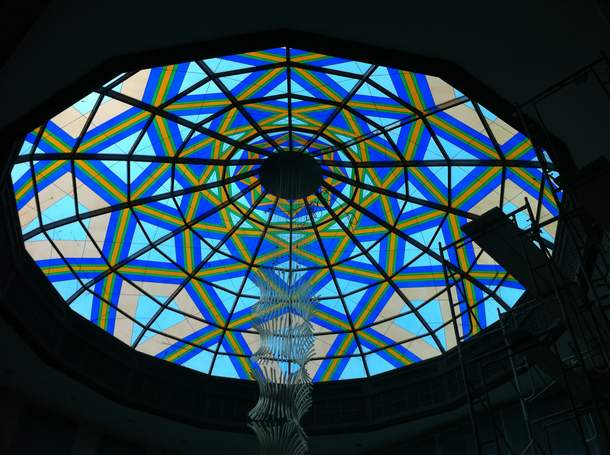
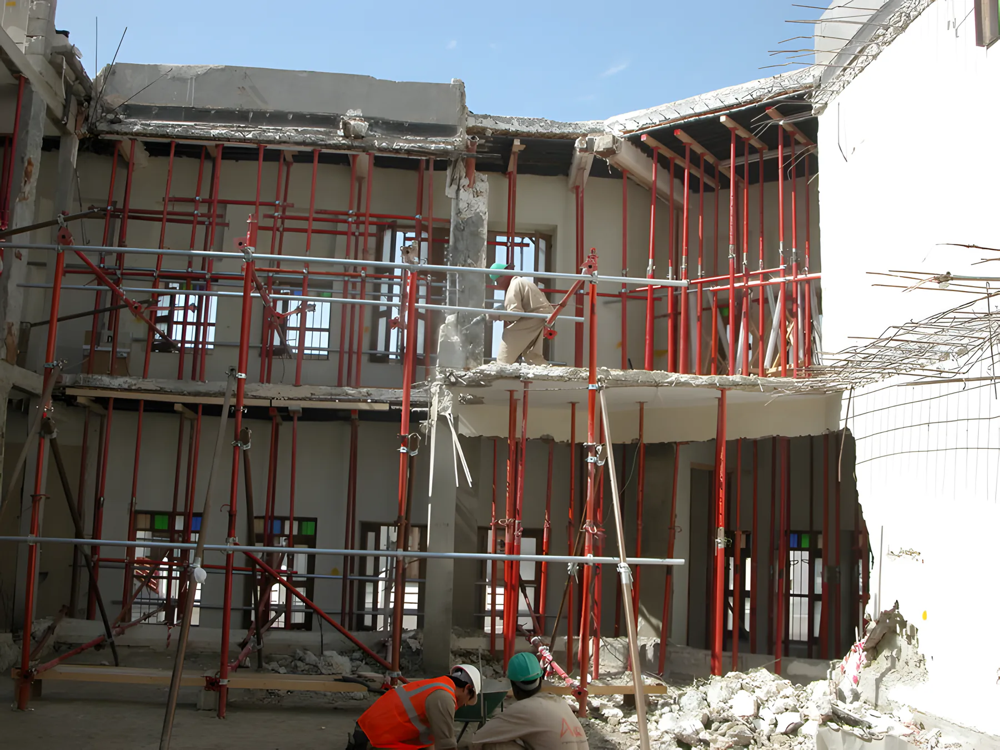
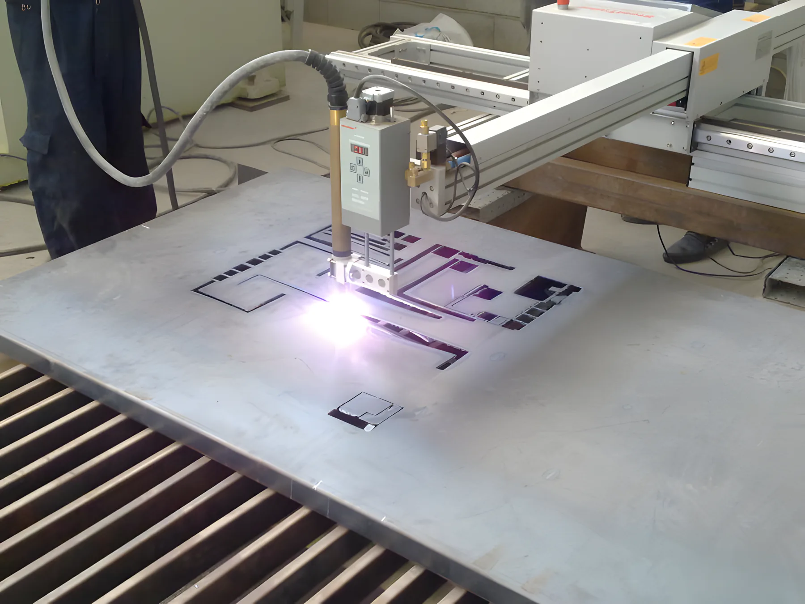
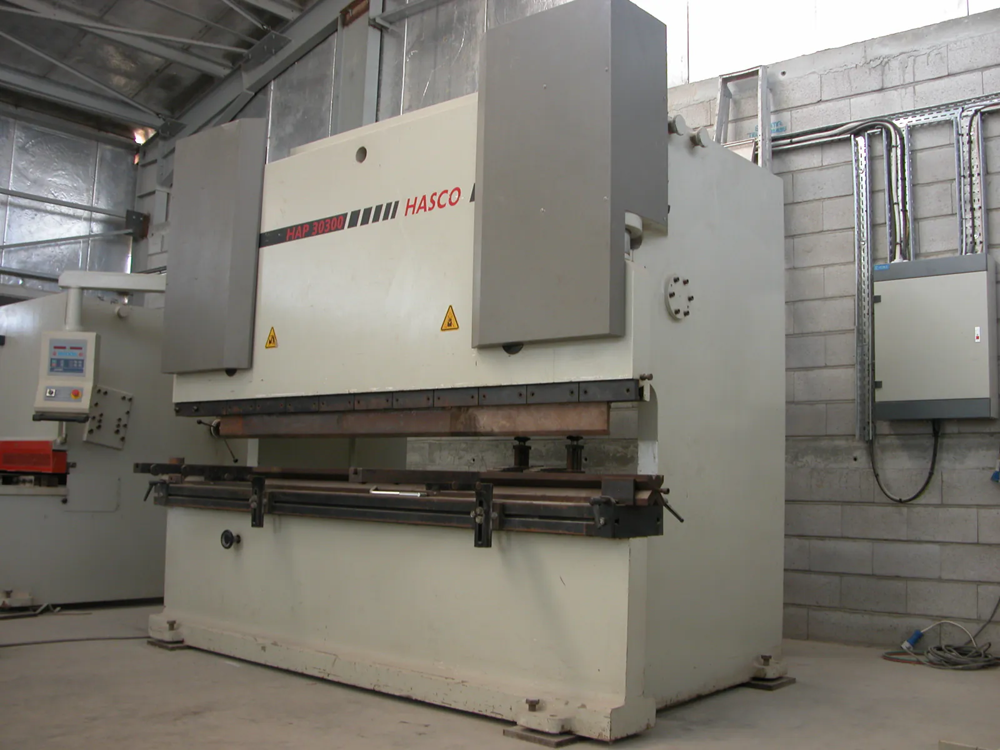
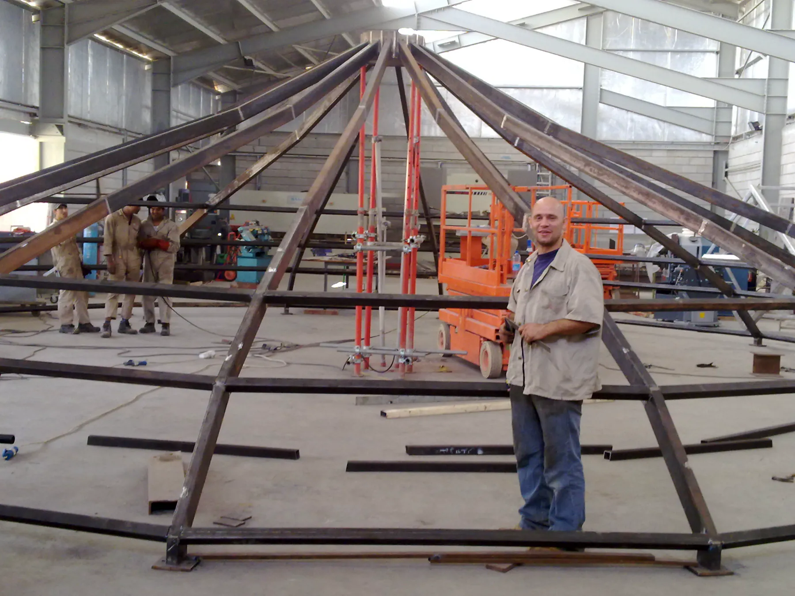
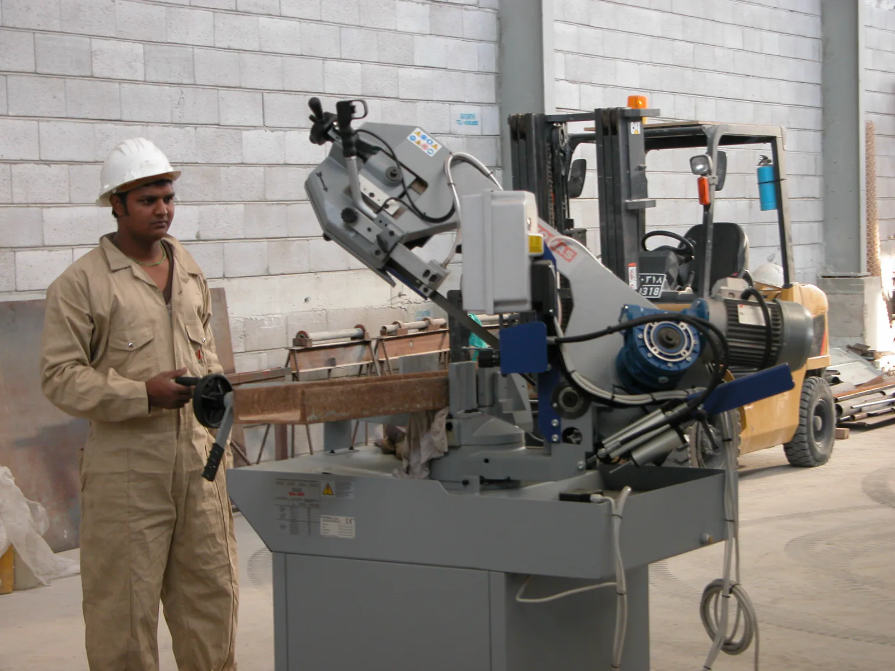
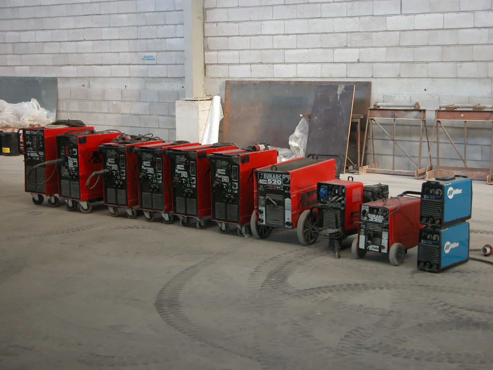

على أرضية الورشة
فرشنا أضلاع القبة بالحجم الكامل ولحمناها في الورشة، حتى نتأكد من كل وصلة قبل أن يصعد أي شيء إلى السطح.

هياكل حديدية، خرسانة، أعمال كهروميكانيكية وترميم المباني التاريخية، ينفّذها مهندسونا وفرقنا. الحديد والستانلس ستيل نصنّعه في ورشتنا في منطقة السيلية الصناعية.
ننفّذ مشاريع متوسطة الحجم في قطر، بكل التخصصات. وغالباً المشاريع التي فيها موقع صعب، أو جدول زمني ضيّق، أو هندسة يفضّل غيرنا الابتعاد عنها.
سرّنا ليس سراً: تخطيط منظّم لكل خطوة في المشروع، واهتمام شخصي بأدق التفاصيل، وإتقان الحِرفي في التنفيذ.
الهيكل الحديدي للسقف الزجاجي المركزي في فندق الجسرة بسوق واقف، 2012، لصالح المكتب الهندسي الخاص. صنّعناه ووردناه وركّبناه.
فرشنا أضلاع القبة بالحجم الكامل ولحمناها في الورشة، حتى نتأكد من كل وصلة قبل أن يصعد أي شيء إلى السطح.
الهيكل مجمّع على سطح الفندق في سوق واقف، في قلب السوق القديم.
عملنا هو الهيكل الحديدي: الإطار الذي يحمل الزجاج الملوّن.
الهيكل الحديدي للسقف الزجاجي المركزي، فندق الجسرة. أُنجز في 2012.
مختارات من قائمة مشاريعنا في قطر. أغلبها تصميم وتصنيع وتوريد وتركيب بفرقنا.
| رقم | المشروع | العميل | الموقع | السنة |
|---|---|---|---|---|
| 01 | هيكل حديدي للسقف الزجاجي المركزي حديد | Private Engineering Office | فندق الجسرة، سوق واقف | 2012 |
| 02 | جسر حديدي لمرفق التمريض حديد | Hamad Medical Center | مجمّع حمد الطبي، وادي السيل | 2013 |
| 03 | أعمال خرسانة للقبو 1 و2 والطابق الأرضي خرسانة | I.T.D. Qatar | Sarah Tower، الخليج الغربي | 2013 |
| 04 | هياكل حديدية لأعمال اللوبي حديد | C.E.G. Qatar | أبراج شموخ، شارع حمد بن سحيم | 2013 |
| 05 | إضافة طابق على السطح حديد | Private Engineering Office | فندق الجمرك، سوق واقف | 2013 |
| 06 | هيكل حديدي وأعمال كهروميكانيكية لمكاتب حديدMEP | Raytheon / Posco | شارع أبو سمرة | 2012 |
| 07 | ممشى حديد وألمنيوم لبرج مركز التجارة العالمي حديد | Folda Qatar / Arabtec | الكورنيش | 2012 |
| 08 | هيكل حديدي لمبنى QNB، فرع الفريج حديد | Gulf Contracting Co. / QNB | شارع المطار | 2012 |
| 09 | فندق بلوك C: مبانٍ جديدة والحفاظ على الواجهات ترميم | Private Engineering Office | سوق واقف | 2010 |
متر مكعب من الخرسانة المصبوبة في سجلّنا: بلاطات، أنوية، أعمدة، جدران استنادية وأرضيات صناعية.
من الطاقة الصناعية وردناها وركّبناها، إضافة إلى 500 طن تبريد.
متر مربع من المخازن والورش والكراجات نتولّى صيانتها وخدمتها بالكامل.
موظفونا ينفّذون كل التخصصات، ما عدا الديكور الداخلي حيث ندير ونشرف على مقاولين متخصصين. التفاصيل الكاملة (بالإنجليزية)

الترميم يحتاج خبرة في كل تخصصات البناء في وقت واحد. وأصعب عمل أنجزناه حتى الآن في قلب سوق واقف:
بإشراف المكتب الهندسي الخاص. نطاق العمل:
وقبل قطر، في بيروت: المقرّ التاريخي لبنك فرعون وشيحا في ساحة النجمة، وقصر بسترس، النادي Metropolitan في الأشرفية.
منذ 2010 لقسم الهياكل الحديدية منشأته الخاصة في منطقة السيلية. وفي 2011 أضفنا ورشة منفصلة للستانلس ستيل واللحام الخاص، بأدواتها وعمّالها، حتى لا يلامس الستانلس الحديد العادي.




